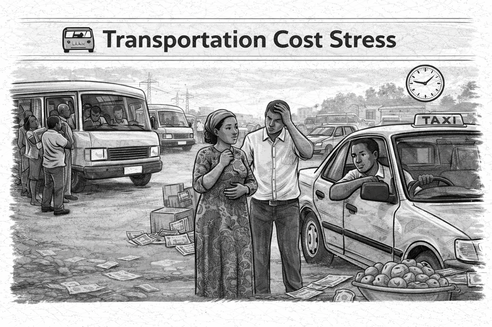

Transportation Cost Stress
Analyst Den Research Project
Next update starts in
Loading…

Project Overview
Transportation costs are a growing source of economic pressure for commuters and taxi drivers in Ogun State. Rising fuel prices, fare instability, and infrastructure constraints are reshaping daily mobility and household finances. This project documents how transport cost stress affects income, access to work, and daily living.
LocationOgun State, Nigeria
Study PeriodMarch – May 2026
Project TypeField Research
OutputPublic Insights Report
Primary Recipients
- Ogun State Ministry of Transportation
Public transport, fares, mobility planning. - Ogun State Ministry of Works and Infrastructure
Road conditions and congestion. - Ogun State Ministry of Economic Planning and Budget
Planning and development priorities.
Research Objectives
- Understand daily commuting costs
- Assess taxi driver income variability
- Identify peak cost pressure periods
- Document commuter coping strategies